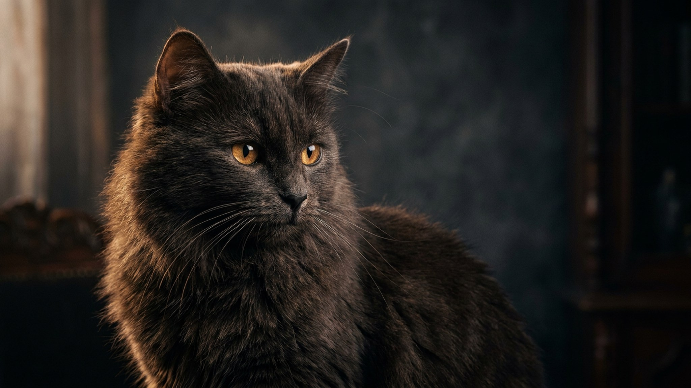

Эльфа замечаешь сразу: голая тёплая кожа как у сфинкса, а уши загнуты назад изящными завитками, будто у сказочного существа. За внешностью «инопланетянина» — ласковый кот-липучка, который лезет под одеяло и ходит по пятам. Но именно эта порода требует ухода, о котором не задумываешься с обычной кошкой: разберём кожу, тепло, уши и характер эльфа.
🐾 Ваш питомец — кошка эльф?
Заведите профиль в AnimaLife: приложение запомнит породу, возраст и вес и будет подсказывать по уходу именно для неё. Вопросы AI-ветеринару — круглосуточно и бесплатно.
Завести профиль → Завести в MAX →
У вас iPhone? AnimaLife есть в App Store
Эльф — молодая и редкая американская порода, полученная скрещиванием канадского сфинкса и американского кёрла. От сфинкса эльфу досталась бесшёрстность и характер, от кёрла — фирменные уши, загнутые назад. Кошка средняя по размеру, крепкая, с длинными пальцами и очень «человекоориентированная».
Уши — не просто украшение: хрящ у них жёсткий, и заламывать или тянуть завиток нельзя. В остальном по потребностям эльф — это тот же сфинкс, а значит, лысая кожа диктует весь уход.
Без шерсти кожа сама собирает жир, а вместе с ним — пыль и грязь, особенно в складках. Отсюда — купания, которых обычная кошка не знает.
Без шёрстной «шубы» эльф теряет тепло быстрее и сам ищет источники: батарею, ноутбук, ваше одеяло, других животных. Помогите ему заранее.
Эльф — экстраверт: общительный, игривый, привязчивый, плохо переносит долгое одиночество. Он спит с вами под одеялом и «участвует» во всех делах. Такой кот подойдёт тому, кто много дома и готов на ежедневный контакт и регулярный уход за кожей.
Не лучший выбор, если питомец часто остаётся один надолго или уход «по расписанию» вас тяготит. Тепло, чистая кожа и внимание для эльфа — не роскошь, а базовые условия.
🐾 У вас кошка эльф?
AnimaLife соберёт уход под породу: к каким болезням есть склонность, что проверять по возрасту, чем кормить и когда пора к врачу. Бесплатно, прямо в мессенджере.
Собрать план ухода → Собрать в MAX →
У вас iPhone? AnimaLife есть в App Store
🐾 Понравился разбор?
Подпишитесь на канал — каждый день разбираем по одному тревожному симптому у кошек и собак: что в пределах нормы, а когда пора к врачу. Подпишитесь, чтобы не пропустить разбор, который может спасти здоровье вашего питомца.
Материал носит информационный характер и не заменяет очную консультацию ветеринара.